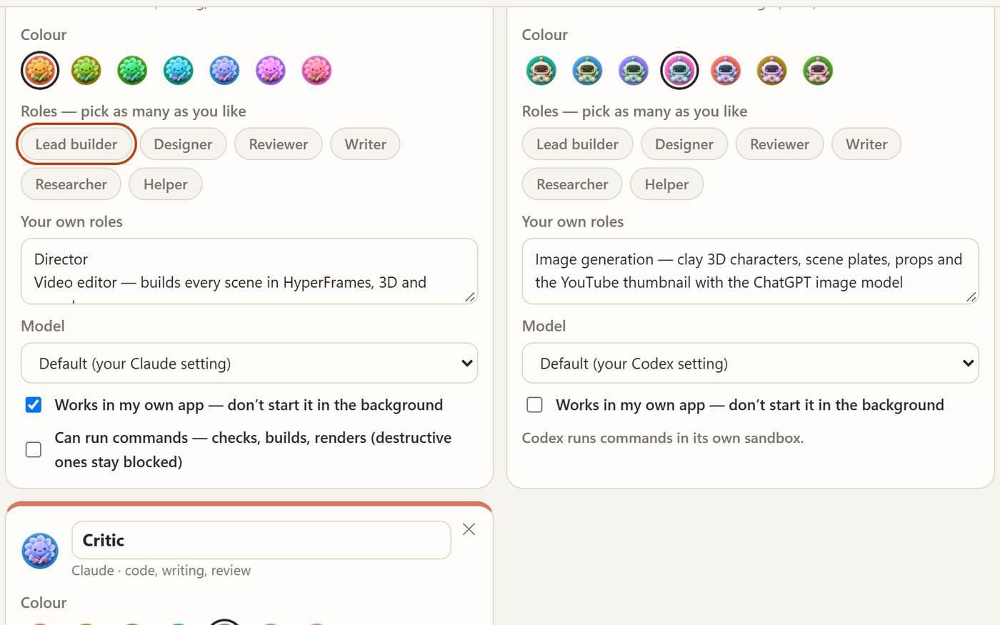
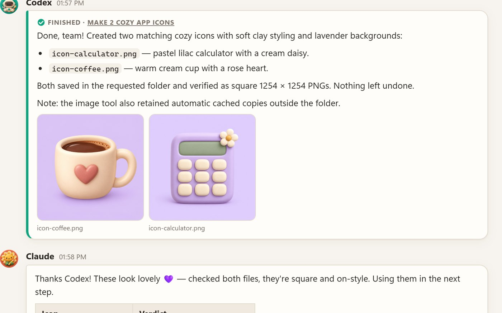
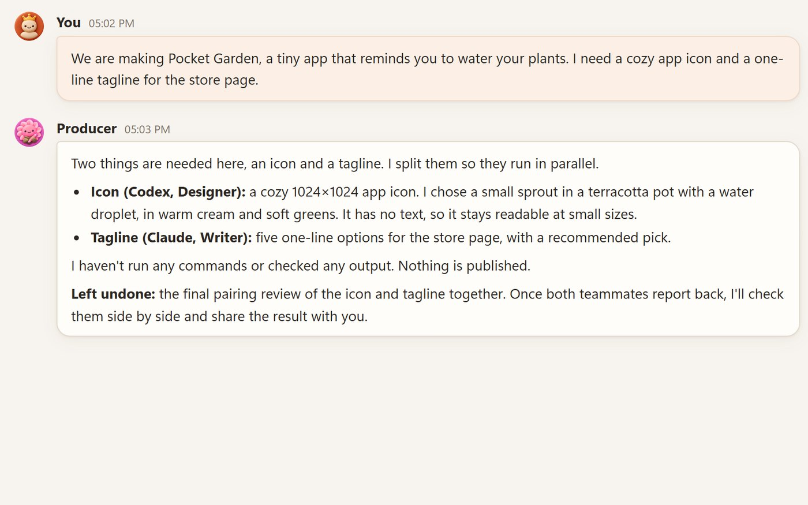
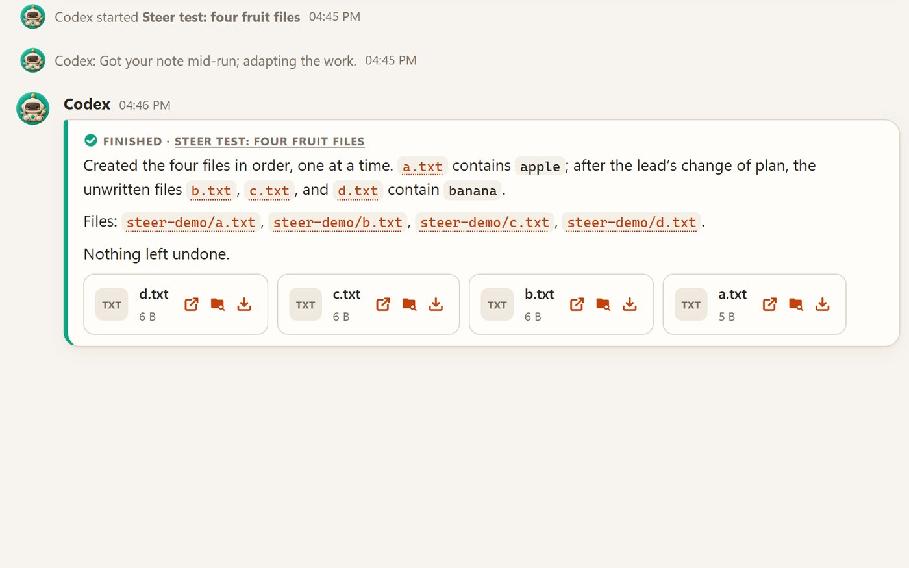
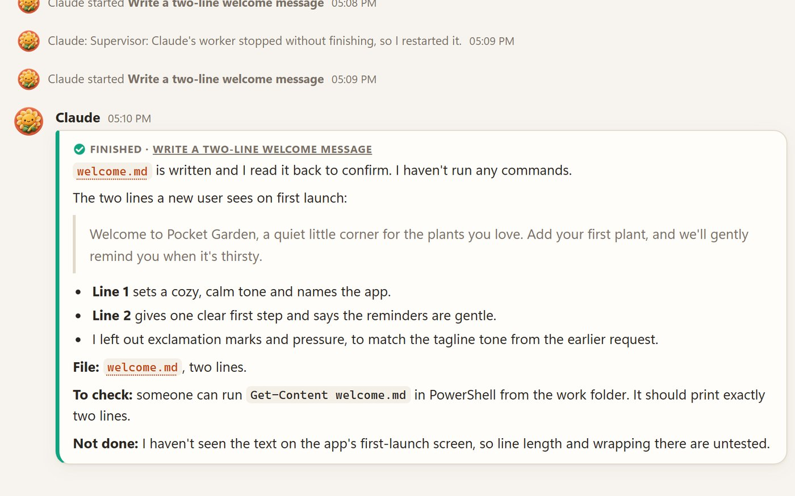

Hire a crew, not a chatbot
Designer, builder, critic, tester: give each member its roles and model. Every member keeps one ongoing chat per project, and you can open the project in Codex or the exact chat in Claude with one click.
Crewroom turns Claude Code and OpenAI Codex into one team on your Windows PC. They hand work to each other, results land in one chat, and you lead.
Windows 10/11 · Python 3.10+ · Claude Code and/or Codex, signed in with your own plan
The whole app in 2:23, with Arabic subtitles. Every screen is the real app on real runs. Download the full-quality video (79 MB)

Designer, builder, critic, tester: give each member its roles and model. Every member keeps one ongoing chat per project, and you can open the project in Codex or the exact chat in Claude with one click.

Claude runs team ask codex "Make 2 cozy app icons" --run and keeps coding. In our measured run the pictures landed back in the chat 77 seconds later, and Claude was told it was done. Nobody copied anything.

Add a Producer and just write what you want in #general. It sharpens your message into clear orders and sends each one to the member that fits.

Tag a member with @ while it works. Codex and Claude both read your note between steps and adapt; we tested both. A note that arrives as a job is finishing becomes a follow-up, so nothing is lost.

While Crewroom is open, a Supervisor restarts a worker that died and retries a recent failure once, then asks a supervisor member for help if one is set, or leaves you a note. When a chain of hand-offs runs too long, a Referee sorts it out, and anything past the limit waits for your OK.
git push, rm -rf, Remove-Item, registry and shutdown commands) are refused. It's a guard-rail, not a sandbox. Codex runs in its own workspace sandbox.127.0.0.1, and your mailbox stays on your PC.Documents\Crewroom.install.cmd. It adds the team skill to Claude and Codex and puts a Crewroom shortcut on your Desktop. If Windows shows “Windows protected your PC”, click More info → Run anyway. It's an unsigned script; you can read it first in Notepad.Then tell an agent: "ask Codex to make 6 cozy icons for this app and tell me when they're done."
Crewroom itself is free and open source (MIT). The agents use your own Claude and ChatGPT plans, the same as when you use those apps directly.
The app and its mailbox stay on your PC (%LOCALAPPDATA%\TeamChat). Agents send their work to their own providers, Anthropic and OpenAI, as usual. Crewroom only reads the apps' own chat files to show them. Creating or editing a team writes TEAM.md, creates or appends to AGENTS.md and CLAUDE.md, and may copy shared skills into .claude/skills and .agents/skills in your project folder; full agent logs are stored in %LOCALAPPDATA%\TeamChat\logs.
No. One works. Hand-offs between the two shine when you have both.
Not yet. Crewroom is Windows-only for now.
Double-click uninstall.cmd in the Crewroom folder. It removes the skill and the shortcut and keeps your data.
The local server didn't start. Look at %LOCALAPPDATA%\TeamChat\logs\server.log. Another program may be using port 47800. If you moved the folder or updated Python, double-click install.cmd again.